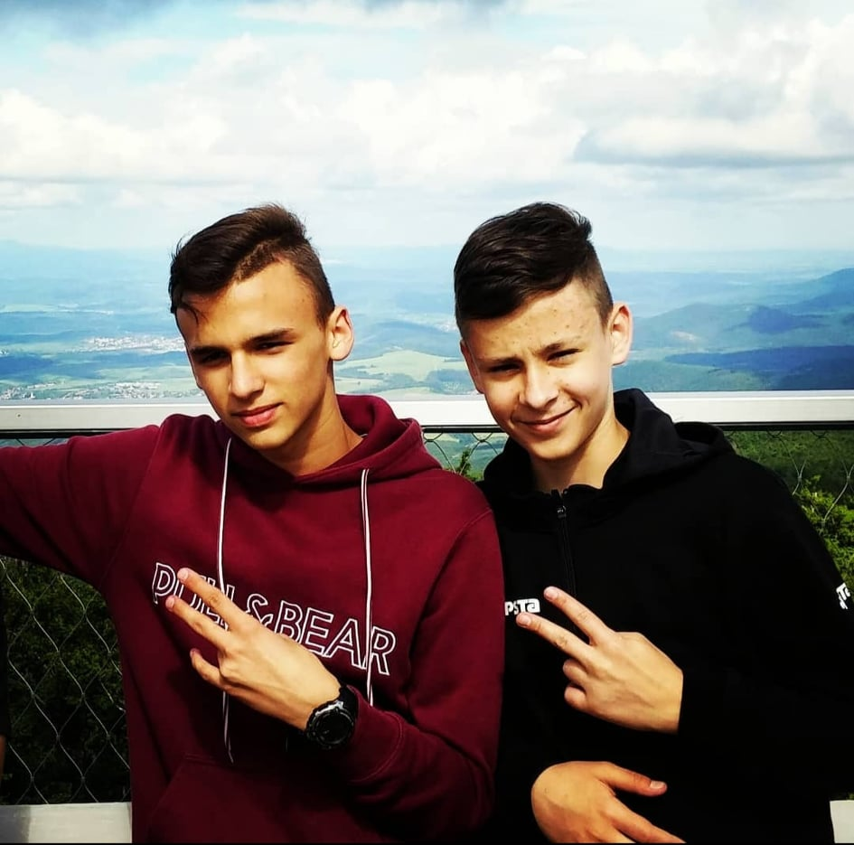

Kónya Benedek - Önéletrajzom
Személyes információk
- Születéskori név: Kónya Benedek
- Életkor: 15
- Jelenlegi lakhely: Debrecen
- Beszélt nyelvek:
- Magyar (Anyanyelvi szinten beszélem.)
- Angol (Középfokú szinten beszélem, megértem.)
Tanulmányaim
2012-2020:
- Debreceni Hatvani István Általános iskola - 8 évfolyamos iskola, nem szakos osztályba jártam.
2020- :
- Mechwart András Gépipari és Informatikai Technikum - 5 évfolyamos technikum, az Informatikai rendszer- és alkalmazás-üzemeltető technikus képzésen veszek részt.
Hobbijaim, szabadidős tevékenységeim, terveim a jövőre nézve
Hobbijaim:
Kedvenc hobbijaimként említhető a focizás illetve a különböző számítás technikai elfoglaltságok. Körülbelüli 8 évet fociztam különböző helyeken. A "pályafutásomat" a DSI-nél kezdtem, majd elhatározásom szerint komolyabban akartam űzni ezt a sportot, ezért egyesületet váltottunk és a továbbiakban a Loki Foci Suli 2005-ös korosztályánál folytattam az edzéseket. Itt edzettem egészen egészen 2020 május-júniusáig. Egy hirtelen edzőváltás miatt az amúgyis kevés létszámmal rendelkező csapat feloszlott.
Szeretek sok időt eltölteni a számítógép előtt nem tagadom, túlzás lenne azt állítani hogy minden percet hasznosan töltök, ugyanis mint minden hozzám hasonló korú gyerek én is nagyrészt csak játszok. De amikor éppen nem játékkal foglalom le magam akkor általában valamilyen oktató videót nézek. Általában különböző programokról szoktam nézni tutorialokat, ilyenekről például, hogy Adobe After Effects, Photoshop, Sony Vegas, Premier Pro. Ezen kívül nagyon érdekelnek a különböző játékokhoz gyártott csalások. Ezekről is nagy szeretettel nézek videókat, ugyanis igazán érdekesnek találom ahogy a fejlesztők különböző módokon, aknázzák ki a játék által nyújtott lehetőségeket.
Szabadidős tevékenységeim:
Szabadidőmben szívesen foglalkozok a macskáimmal, beszélgetek ismerősökkel, osztálytársakkal, játszok a számítógépen. Szeretek esetenként 1-2 sakk meccset lejátszani bár nem vagyok benne valami ügyes, de szeretnék fejlődni benne.
Terveim a jövőre:
Miután sikeresen elvégzem (remélhetőleg) a közép sulit, utána a Debreceni Egyetem Informatika Karára szeretnék jelentkezni. Ha elvégzem az egyetemet akkor még kérdéses hogy merre akarok elindulni, mert őszintén én magam sem tudom jelenleg.
Elérhetőségeim